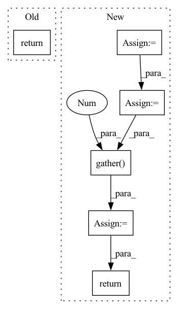

Pattern ID :19100
Before Change
image_embed_dim = self.image_embed_dim
text_cond = self.get_text_cond(text)
return self.p_sample_loop((batch_size, image_embed_dim), text_cond = text_cond)
def q_sample(self, x_start, t, noise=None):
noise = default(noise, lambda: torch.randn_like(x_start))After Change
text_embeds = rearrange(text_embeds, "(b r) d -> b r d", r = num_samples_per_batch)
image_embeds = rearrange(image_embeds, "(b r) d -> b r d", r = num_samples_per_batch)
text_image_sims = einsum("b r d, b r d -> b r")
top_sim_indices = text_image_sims.topk(k = 1).indices
top_sim_indices = repeat(top_sim_indices, "b 1 -> b d", d = image_embed_dim)
top_image_embeds = image_embeds.gather(1 , top_sim_indices)
return top_image_embeds
def q_sample(self, x_start, t, noise=None):
noise = default(noise, lambda: torch.randn_like(x_start))In pattern: SUPERPATTERN
Frequency: 4
Non-data size: 6
Instances Fragment ID: 62215413
Project Name: lucidrains/dalle2-pytorch
Commit Name: d3cded3c6cd76eca7135f669a96658a244d0f49f
Time: 2022-04-13
Author: lucidrains@gmail.com
File Name: dalle2_pytorch/dalle2_pytorch.py
M Class Name: DiffusionPrior
N Class Name: DiffusionPrior
M Method Name: sample(3)
N Method Name: sample(2)
M Parent Class: nn.Module
N Parent Class: nn.Module
M File Name: dalle2_pytorch/dalle2_pytorch.py
N File Name: dalle2_pytorch/dalle2_pytorch.py
M Start Line: 413
M End Line: 413
N Start Line: 408
N End Line: 430
Before Change
else:
true_scores = torch.cat(
(true_scores, score[i][loc_len[i] - 1].reshape(1, -1)), 0)
return true_scores
def predict(self, batch):
return self.forward(batch)After Change
// batch_size * state_len * 2 x input_size
out = torch.cat((hidden_state, context), 2)
// 因为是补齐了的，所以需要找到真正的 out
origin_len = batch.get_origin_len("current_loc")
final_out_index = torch.tensor(origin_len) - 1
final_out_index = final_out_index.reshape(final_out_index.shape[0], 1, -1)
final_out_index = final_out_index.repeat(1, 1, 2*self.hidden_size).to(self.device)
out = torch.gather( out, 1 , final_out_index) .squeeze(1) // batch_size * (2*hidden_size)
out = self.dropout(out)
y = self.fc_final(out) // batch_size * loc_size
score = F.log_softmax(y, dim=1)
return score
def predict(self, batch):
return self.forward(batch) Fragment ID: 62215444
Project Name: libcity/bigscity-libcity
Commit Name: ec61c9cd984d1c86ee715380ed3b65b4222c8d1f
Time: 2021-05-06
Author: 33283819+WenMellors@users.noreply.github.com
File Name: trafficdl/model/trajectory_loc_prediction/DeepMove.py
M Class Name: DeepMove
N Class Name: DeepMove
M Method Name: forward(2)
N Method Name: forward(2)
M Parent Class: AbstractModel
N Parent Class: AbstractModel
M File Name: trafficdl/model/trajectory_loc_prediction/DeepMove.py
N File Name: trafficdl/model/trajectory_loc_prediction/DeepMove.py
M Start Line: 122
M End Line: 175
N Start Line: 152
N End Line: 163
Before Change
_, memory_indices, _ = self.vq(x)
memories = self.values[memory_indices]
return memories
After Change
if memory_indices.ndim == 2:
memory_indices = rearrange(memory_indices, "... -> ... 1")
memory_indices = rearrange(memory_indices, "b n h -> b h n")
values = repeat(self.values, "h n d -> b h n d", b = memory_indices.shape[0])
memory_indices = repeat(memory_indices, "b h n -> b h n d", d = values.shape[-1])
memories = values.gather(2 , memory_indices)
return rearrange(memories, "b h n d -> b n (h d)")
Fragment ID: 62215415
Project Name: lucidrains/discrete-key-value-bottleneck-pytorch
Commit Name: 1c08320164b3db790044a9da02a075e659d1a306
Time: 2022-07-25
Author: lucidrains@gmail.com
File Name: discrete_key_value_bottleneck_pytorch/discrete_key_value_bottleneck.py
M Class Name: DiscreteKeyValueBottleneck
N Class Name: DiscreteKeyValueBottleneck
M Method Name: forward(2)
N Method Name: forward(2)
M Parent Class: nn.Module
N Parent Class: nn.Module
M File Name: discrete_key_value_bottleneck_pytorch/discrete_key_value_bottleneck.py
N File Name: discrete_key_value_bottleneck_pytorch/discrete_key_value_bottleneck.py
M Start Line: 49
M End Line: 50
N Start Line: 52
N End Line: 62
Before Change
else:
true_scores = torch.cat(
(true_scores, score[i][loc_len[i] - 1].reshape(1, -1)), 0)
return true_scores
def predict(self, batch):
return self.forward(batch)After Change
out, out_len = pad_packed_sequence(out, batch_first=True)
// out = out.permute(1, 0, 2)
origin_len = batch.get_origin_len("current_loc")
final_out_index = torch.tensor(origin_len) - 1
final_out_index = final_out_index.reshape(final_out_index.shape[0], 1, -1)
final_out_index = final_out_index.repeat(1, 1, self.hidden_size).to(self.device)
out = torch.gather( out, 1 , final_out_index) .squeeze(1) // batch_size * hidden_size
out = F.selu(out)
out = self.dropout(out)
y = self.fc(out)
score = F.log_softmax(y, dim=1) // calculate loss by NLLoss
return score
def predict(self, batch):
return self.forward(batch) Fragment ID: 62215420
Project Name: libcity/bigscity-libcity
Commit Name: ec61c9cd984d1c86ee715380ed3b65b4222c8d1f
Time: 2021-05-06
Author: 33283819+WenMellors@users.noreply.github.com
File Name: trafficdl/model/trajectory_loc_prediction/RNN.py
M Class Name: RNN
N Class Name: RNN
M Method Name: forward(2)
N Method Name: forward(2)
M Parent Class: AbstractModel
N Parent Class: AbstractModel
M File Name: trafficdl/model/trajectory_loc_prediction/RNN.py
N File Name: trafficdl/model/trajectory_loc_prediction/RNN.py
M Start Line: 87
M End Line: 97
N Start Line: 84
N End Line: 94